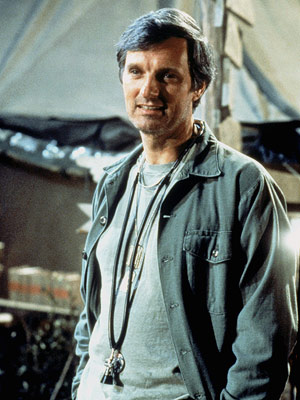
Question 1: Which actor plays Hawkeye?
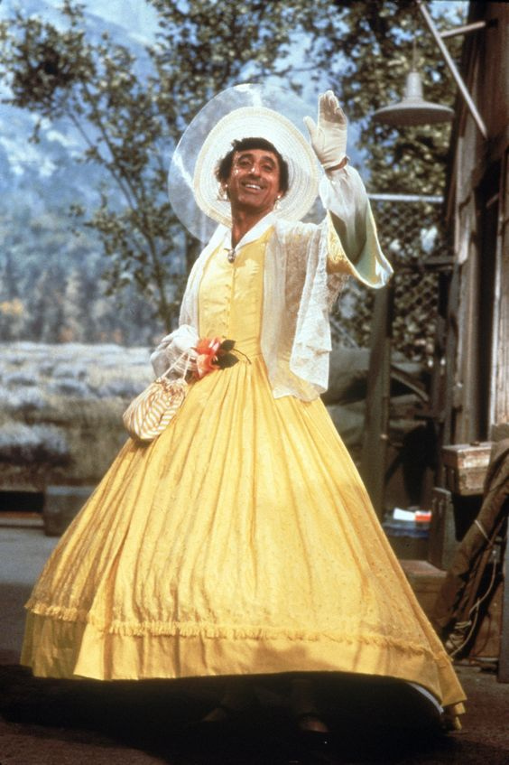
Question 2: Which city is Klinger from?
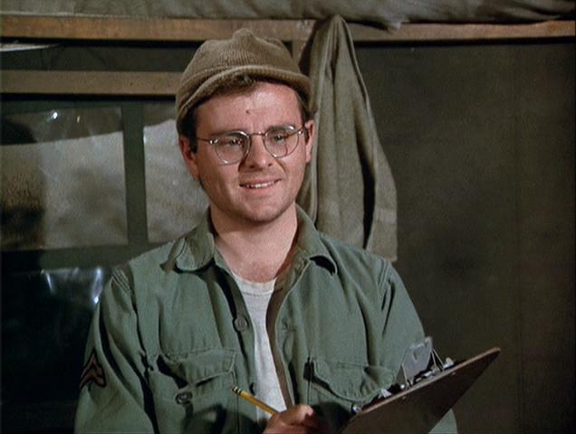
Question 3: What instrument does Gary Burghoff play?
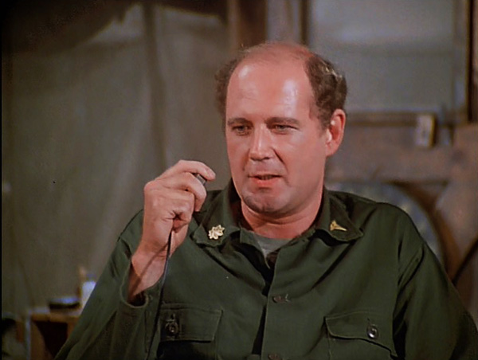
Question 4: Who replaces Frank Burns as Hawkeye and B.J.'s roommate in Season 6?
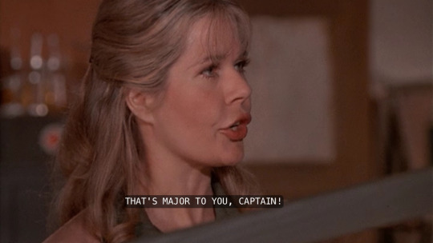
Question 5: What nickname does Margaret Houlihan hate?
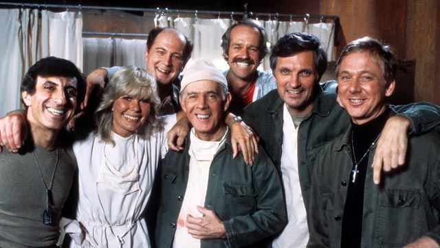
Question 6: Who is the only character to appear in every episode?
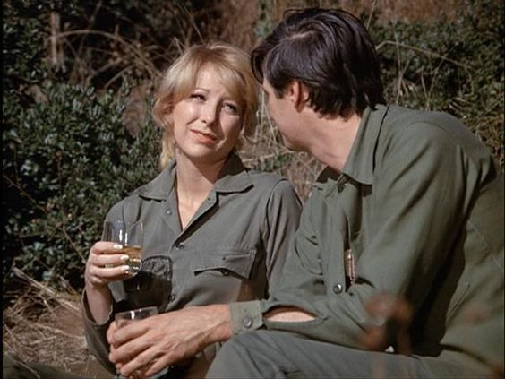
Question 7: Which of the following actresses do not guest star on the show?
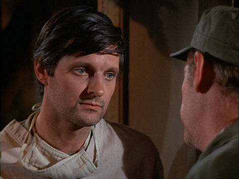
Question 8: What is Hawkeye's real name?
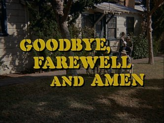
Question 9: How many viewers tuned in for the series finale in 1983, making it the most-watched finale of all time?
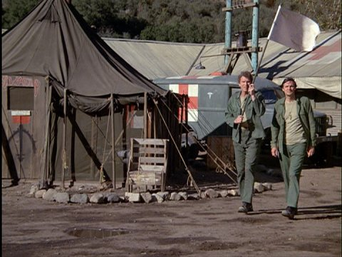
Question 10: What is the main characters' tent called?

Question 11: Which event in the plot was kept a secret from the actors until shooting?
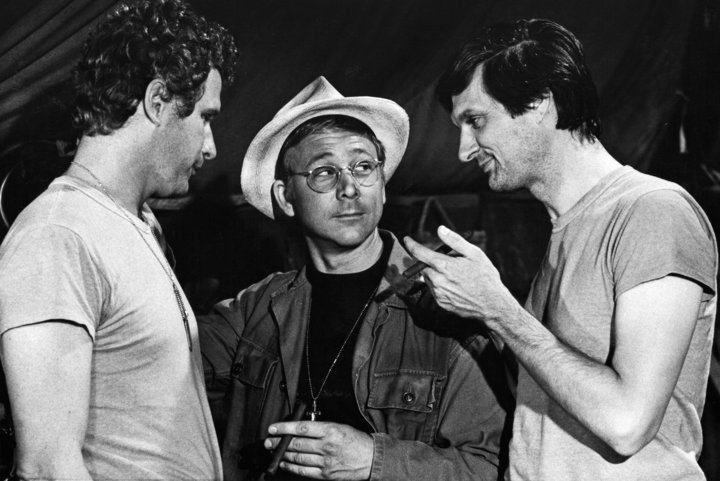
Question 12: What denomination of Christianity is John Mulcahy?
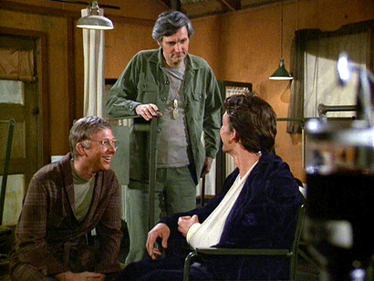
Question 13: Which famous actor plays Pvt. Gary Sturgis in the episode "Blood Brothers"?
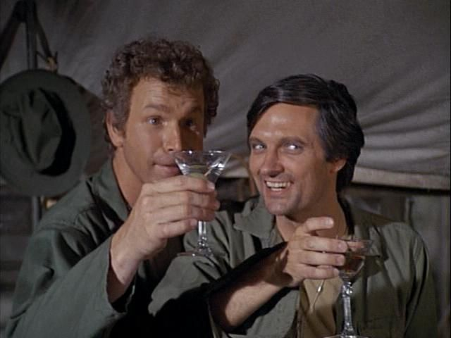
Question 14: How does Hawkeye like his martinis?
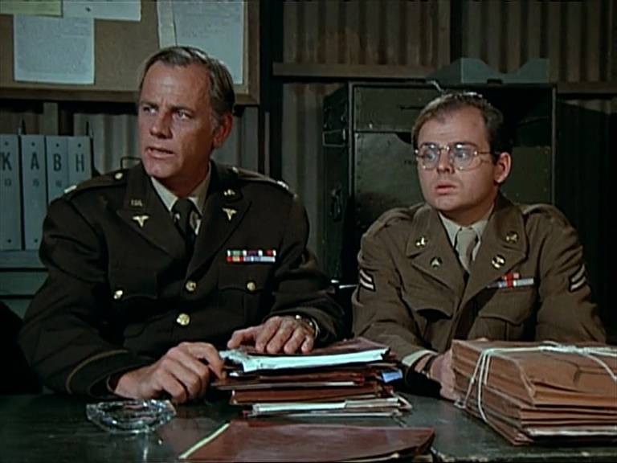
Question 15: What product does Radar sell in "The Trial of Henry Blake"?
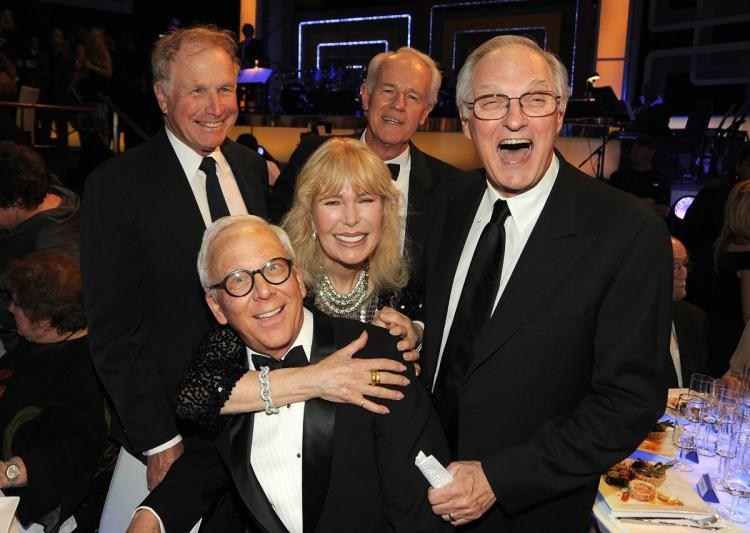
Question 16: Which actor on the show went on to become a financial expert?
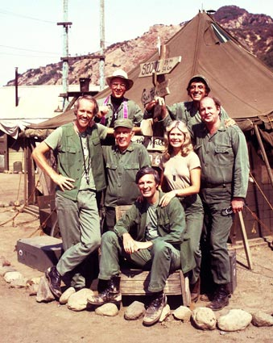
Question 17: Which city is not listed on the signpost outside the Swamp?
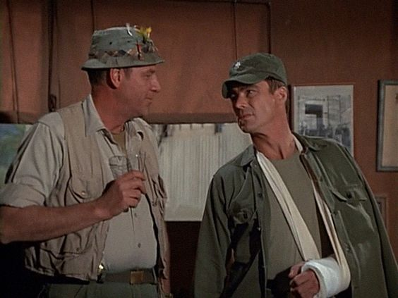
Question 18: Which fan favorite is first introduced in the episode titled, "A Smattering of Intelligence"?
Question 19: What does Radar always hear before anyone else?
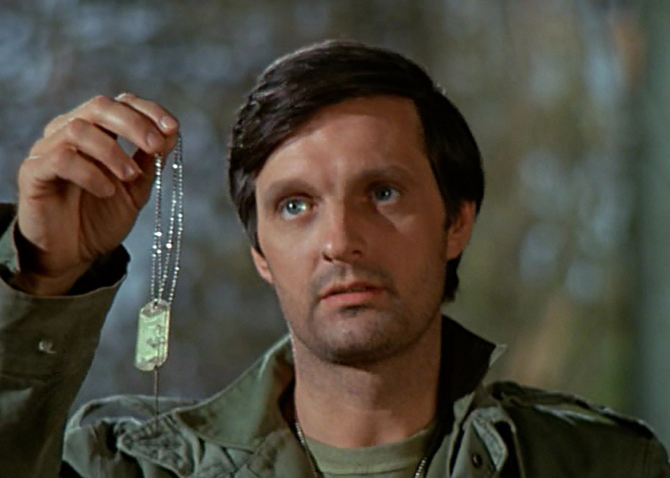
Question 20: What is the name of Hawkeye's childhood imaginary friend who takes on a life of his own in Season 1?
Check Answers